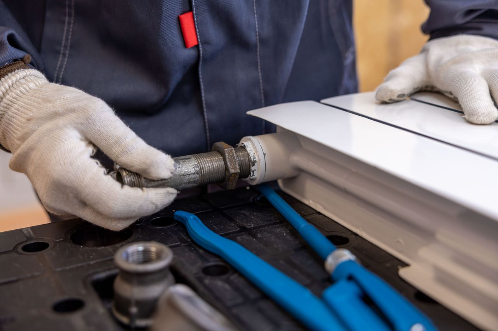
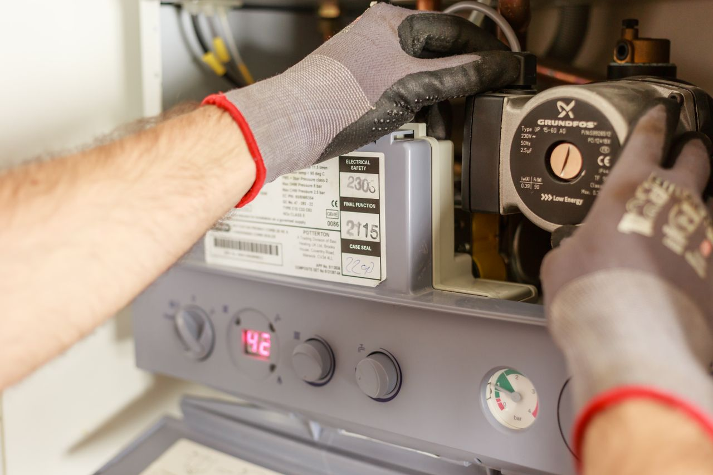

Six services. One standard.
Every job here ends the same way: pressure tested, certified where the law asks for it, and priced before we start, not after. Pick a service below and it opens here: what the work involves, what you get, and how to tell when you need it.
Emergencies & burst pipes
Water damage compounds by the hour. Ceilings soak, skirtings swell, and the first question an assessor asks is when you noticed. Our emergency line is answered by a plumber, not a call centre, and the first thing that happens is not a booking, it is being talked through finding your stopcock so the damage stops while the van is still on the road.

What the call-out covers
- Phone triage: we find your stopcock with you before we leave the yard
- Isolate the failure and make the property safe
- Temporary repair so the house has water again the same visit
- Permanent repair quoted and approved before it happens
- Damage photographed before anything is touched, for your claim
- Written incident note with times, for the insurer
Good to know
- Response
- 90 minutes average across the Southern Suburbs
- Hours
- 24 hours, every day of the year, public holidays included
- Rates
- After-hours rate quoted on the phone, before anyone is dispatched
- Guarantee
- 12 months on the repair and the parts we supplied
Phone us now if
The water meter keeps turning with every tap in the house closed.
A damp patch on a ceiling is visibly growing.
Pressure dropped across the whole property at once.
You can hear water running inside a wall.
Not urgent? Use the form and we will call you back within one working hour.
Geysers & hot water
A geyser almost always warns you first: rusty water, a longer wait for heat, a weeping overflow, a breaker that trips when it fires up. Caught there, it is an element or a thermostat. Missed, it is a tank through a ceiling. When a replacement is the honest answer, the install is what actually matters, because the drip tray, the vacuum breakers and the safety valve are exactly what a COC and an insurance assessor are looking at.

What we do
- Element, thermostat and valve replacement on all common brands
- Full geyser replacement, horizontal or vertical, roof or cupboard
- Solar and heat-pump conversions, with an honest payback estimate
- Drip tray plumbed to outside, vacuum breakers and T&P valve to SANS 10254
- Timers and isolation so the geyser stops heating an empty house
- Claim paperwork prepared in the format assessors ask for
Good to know
- Turnaround
- Standard replacement completed same day in most cases
- Certificate
- COC issued by a PIRB-registered plumber, emailed with the invoice
- Warranty
- Manufacturer tank warranty plus 12 months on our workmanship
- Options
- Repair and replacement both priced in the same quote, so you choose
Warning signs
Hot water runs rusty or brown for the first few seconds.
Water dripping from the overflow pipe outside, or pooling in the roof.
The breaker trips whenever the geyser heats.
You run out of hot water noticeably faster than last year.
Send a photo of the label on your geyser and we can quote before we arrive.
Blocked drains & jetting
Rodding punches a hole through the blockage. Jetting cleans the pipe back to its wall. That difference is the whole reason some households pay to clear the same drain three times a year. We jet it properly, then put a camera down it, so you find out whether you had a one-off or a root, a sagging belly or a cracked section that is going to do this again in March.

What we do
- Machine rodding for a fast clear when that is genuinely all it needs
- High-pressure jetting on kitchen lines, sewers and stormwater
- CCTV inspection, and you get the footage, not a description of it
- Root cutting and removal where a tree has found the joint
- Written report if the fault is structural rather than a blockage
- Municipal connection faults escalated with evidence attached
Good to know
- Turnaround
- Same day on most domestic blockages
- Evidence
- Camera footage sent to your phone after the job
- Repeat
- Blocks again within 30 days on the same line and we return free
- Access
- We work from the inspection eye or gully, no lifted tiles unless agreed
Warning signs
More than one fixture in the house is draining slowly.
The toilet gurgles when the bath empties.
A smell rises from the outside gully after rain.
The same drain blocks on a predictable schedule.
Repeat blockages are quoted with a camera inspection included as standard.
Bathrooms & renovations
Plumbing is a fraction of a bathroom budget and most of what goes wrong two years later: falls that do not fall, a waste pipe buried behind a wall with no access to it, mixers set at the wrong depth for the tile that was eventually chosen. We set the wet works out on day one against the actual tile and fitting spec, which is the unglamorous reason our bathrooms finish on the day we said they would.

What we do
- Strip-out, safe removal and disposal of the old suite
- Full re-pipe in PEX or copper, with isolation on every fixture
- First fix set out against your actual tile thickness and fitting list
- Falls, wastes and access points planned before anything is closed up
- Second fix, commissioning and a pressure test you watch
- Scheduling held with your tiler, electrician and cabinetmaker
Good to know
- Duration
- A typical single bathroom runs 8 to 15 working days
- Schedule
- One written day-by-day plan, updated daily on WhatsApp
- Price
- Fixed. Changes are quoted and approved before they happen
- Handover
- Pressure test in front of you, then the COC where one applies
Talk to us before you
Pay a deposit on tiles, because thickness changes the set-out.
Move a toilet, which depends entirely on where the soil stack runs.
Buy a rain head, if your pressure will not carry one.
Book a tiler, so the trades land in the right order.
Send us your fitting list and we will flag anything that will not work before you buy it.
Leak detection & repairs
A concealed leak arrives as a water bill, not a puddle. Before anybody breaks a wall we pressure-test the section to prove there is a leak and prove where it is not, then trace it acoustically to a point rather than to a room. The whole point of the exercise is opening one small patch of tiling instead of a bathroom floor, and having a reading on paper if the municipality needs convincing.

What we do
- Meter test to confirm the loss is on your side of the connection
- Pressure test section by section to isolate the failing run
- Acoustic tracing to a point, marked on the floor or wall
- Thermal check on hot-water lines under screed
- Smallest viable opening, repair, and the surface made good
- Written report with readings for a municipal account query
Good to know
- Fee
- Detection is a fixed fee, deducted off the repair if we do the repair
- Report
- Formatted for a City of Cape Town account query, with meter readings
- Common find
- Supply line under paving or a driveway, not inside the house
- No find
- No leak on your side of the meter and there is nothing to pay
Warning signs
The bill climbed with no change in how the house is used.
The meter dial creeps with every tap closed.
A patch of floor is warm underfoot.
Damp keeps returning at the base of one wall.
Bring your last three bills. The pattern usually tells us where to start looking.
Maintenance contracts
For a body corporate the expensive plumbing is rarely the burst pipe. It is twelve tenants who each phoned a different plumber, twelve invoices nobody can reconcile, and a trustee taking calls at midnight on a long weekend. One contract gives every unit one number, gives the trustees one invoice, and puts the building on a scheduled inspection so failures get found on a planned visit instead of during a storm.
What the contract covers
- Scheduled inspection of common services and shared risers
- Priority response: contract buildings jump the emergency queue
- Valve and isolation audit, so one repair stops dropping water to everyone
- Geyser age register with a replacement forecast for budgeting
- One monthly report, unprompted, and one monthly invoice
- A direct line for trustees and the managing agent
Good to know
- Suits
- Sectional title from 8 units, rental portfolios, estates, guesthouses
- Reporting
- Monthly, whether or not anything happened that month
- Priority
- Contract holders are dispatched ahead of the general queue
- Pricing
- Per unit per month, quoted only after a first walk-through
Worth a conversation if
Your complex has no record of how old its geysers are.
A single repair means shutting water to the whole building.
Plumbing invoices arrive from three different companies.
Emergency spend is the line item nobody can predict at AGM.
The first inspection is what we quote from. No inspection, no number, no guesswork.

Tell us what's leaking
Phone, WhatsApp a photo, or send the form. A plumber answers either way.